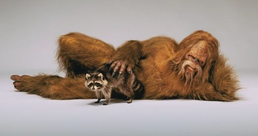

Big Foot
Bigfoot, also known as Sasquatch, is a humanlike, large, and hair creature believed to exist in the northwestern United States. This creature represents the North American counterpart to other creatures known as the Abominable Snowman or Yeti. Bigfoot’s origin comes from the British explorer, David Thompson, when he found footprints of the creature in 1811.
Creature vector
Later in 1924, the legend began to grow as five gold miners were attacked by “large gorilla” creatures and fought back. During the night the creatures returned and attacked their living quarters, the miners then fled in the morning. These claims were then discredited by US forest rangers who proved the footprints were fake. Since then throughout the years there have been sightings of Bigfoot and alleged photography of the creature. Nothing has yet been verified but only contributes to the legend of Bigfoot.

Bigfoot is commonly referred to as Sasquatch and its features are that of a primates. The creature ranges from six to around fifteen feet tall, and has a stench to it. It will either move in silence through a forest, or emit a loud and high pitched scream.
The name Bigfoot comes from its rather large feet, the typical length is 24 inches by 8 inches wide. This 24 inches is over twice the size of a man’s average foot. The name Bigfoot comes from its rather large feet, the typical length is 24 inches by 8 inches wide. This 24 inches is over twice the size of a man’s average foot.
Don't approach this sexy beast, absolutely don't.
Map of North America
Map of Big Foot Territory